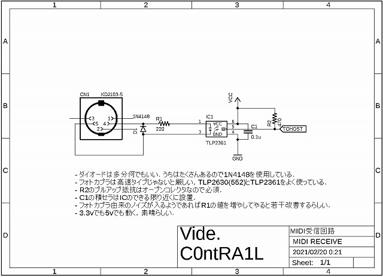

MIDIをマイコンで扱うときの個人的なまとめ
2021-02-20
基本的に受信しか使わないためここでは受信側の記述に留める．
回路編
まず，基本的な受信回路を以下に示す．

基本的に上記の回路で問題はない．
規格書に記載されていたり，メジャーなPC900VやPC910はすでに終売らしいので
基本的にはTLP2361(SOP)，TLP2630(DIP)あたりを使うことになる．
なぜ１回路で十分なのにTLP552を使わないのかといえば，
単純に秋月で取り扱いがあるのがこの２つだからである．
ソフトウェア編
MIDIの規格書に従えば何も難しいことはない．
ネットの海を見て思った点をいくつか挙げると
- MIDIのメッセージを固定長だと思っている人がいる
- ノートオフメッセージが必ず送信されるものだと思っている人がいる
- システムエクスクルーシブの存在を知らない人がいる
こんな感じである.
とりあえず１つずつ述べていこうと思う．